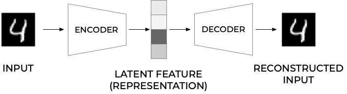

Autoencoders are neural networks where the outputs are its own inputs. They are split into an encoder part which maps the input \( \boldsymbol{x} \) via a function \( f(\boldsymbol{x},\boldsymbol{W}) \) (this is the encoder part) to a so-called code part (or intermediate part) with the result \( \boldsymbol{h} \)
$$ \boldsymbol{h} = f(\boldsymbol{x},\boldsymbol{W})), $$where \( \boldsymbol{W} \) are the weights to be determined. The decoder parts maps, via its own parameters (weights given by the matrix \( \boldsymbol{V} \) and its own biases) to the final ouput
$$ \tilde{\boldsymbol{x}} = g(\boldsymbol{h},\boldsymbol{V})). $$The goal is to minimize the construction error.

We have from last week that the covariance matrix (the correlation matrix involves a simple rescaling) is given as
$$ \boldsymbol{C}[\boldsymbol{x}] = \frac{1}{n}\boldsymbol{X}^T\boldsymbol{X}= \mathbb{E}[\boldsymbol{X}^T\boldsymbol{X}]. $$Let us now assume that we can perform a series of orthogonal transformations where we employ some orthogonal matrices \( \boldsymbol{S} \). These matrices are defined as \( \boldsymbol{S}\in {\mathbb{R}}^{p\times p} \) and obey the orthogonality requirements \( \boldsymbol{S}\boldsymbol{S}^T=\boldsymbol{S}^T\boldsymbol{S}=\boldsymbol{I} \). The matrix can be written out in terms of the column vectors \( \boldsymbol{s}_i \) as \( \boldsymbol{S}=[\boldsymbol{s}_0,\boldsymbol{s}_1,\dots,\boldsymbol{s}_{p-1}] \) and \( \boldsymbol{s}_i \in {\mathbb{R}}^{p} \).
Assume also that there is a transformation \( \boldsymbol{S}^T\boldsymbol{C}[\boldsymbol{x}]\boldsymbol{S}=\boldsymbol{C}[\boldsymbol{y}] \) such that the new matrix \( \boldsymbol{C}[\boldsymbol{y}] \) is diagonal with elements \( [\lambda_0,\lambda_1,\lambda_2,\dots,\lambda_{p-1}] \).
That is we have
$$ \boldsymbol{C}[\boldsymbol{y}] = \mathbb{E}[\boldsymbol{S}^T\boldsymbol{X}^T\boldsymbol{X}T\boldsymbol{S}]=\boldsymbol{S}^T\boldsymbol{C}[\boldsymbol{x}]\boldsymbol{S}, $$since the matrix \( \boldsymbol{S} \) is not a data dependent matrix. Multiplying with \( \boldsymbol{S} \) from the left we have
$$ \boldsymbol{S}\boldsymbol{C}[\boldsymbol{y}] = \boldsymbol{C}[\boldsymbol{x}]\boldsymbol{S}, $$and since \( \boldsymbol{C}[\boldsymbol{y}] \) is diagonal we have for a given eigenvalue \( i \) of the covariance matrix that
$$ \boldsymbol{S}_i\lambda_i = \boldsymbol{C}[\boldsymbol{x}]\boldsymbol{S}_i. $$In the derivation of the PCA theorem we will assume that the eigenvalues are ordered in descending order, that is \( \lambda_0 > \lambda_1 > \dots > \lambda_{p-1} \).
The eigenvalues tell us then how much we need to stretch the corresponding eigenvectors. Dimensions with large eigenvalues have thus large variations (large variance) and define therefore useful dimensions. The data points are more spread out in the direction of these eigenvectors. Smaller eigenvalues mean on the other hand that the corresponding eigenvectors are shrunk accordingly and the data points are tightly bunched together and there is not much variation in these specific directions. Hopefully then we could leave it out dimensions where the eigenvalues are very small. If \( p \) is very large, we could then aim at reducing \( p \) to \( l < < p \) and handle only \( l \) features/predictors.
Here's how we would proceed in setting up the algorithm for the PCA, see also discussion below here.
We will use a simple example first with two-dimensional data drawn from a multivariate normal distribution with the following mean and covariance matrix (we have fixed these quantities but will play around with them below):
$$ \mu = (-1,2) \qquad \Sigma = \begin{bmatrix} 4 & 2 \\ 2 & 2 \end{bmatrix} $$Note that the mean refers to each column of data. We will generate \( n = 10000 \) points \( X = \{ x_1, \ldots, x_N \} \) from this distribution, and store them in the \( 1000 \times 2 \) matrix \( \boldsymbol{X} \). This is our design matrix where we have forced the covariance and mean values to take specific values.
The following Python code aids in setting up the data and writing out the design matrix. Note that the function multivariate returns also the covariance discussed above and that it is defined by dividing by \( n-1 \) instead of \( n \).
import numpy as np
import pandas as pd
import matplotlib.pyplot as plt
from IPython.display import display
n = 10000
mean = (-1, 2)
cov = [[4, 2], [2, 2]]
X = np.random.multivariate_normal(mean, cov, n)
Now we are going to implement the PCA algorithm. We will break it down into various substeps.
The first step of PCA is to compute the sample mean of the data and use it to center the data. Recall that the sample mean is
$$ \mu_n = \frac{1}{n} \sum_{i=1}^n x_i $$and the mean-centered data \( \bar{X} = \{ \bar{x}_1, \ldots, \bar{x}_n \} \) takes the form
$$ \bar{x}_i = x_i - \mu_n. $$When you are done with these steps, print out \( \mu_n \) to verify it is close to \( \mu \) and plot your mean centered data to verify it is centered at the origin! The following code elements perform these operations using pandas or using our own functionality for doing so. The latter, using numpy is rather simple through the mean() function.
df = pd.DataFrame(X)
# Pandas does the centering for us
df = df -df.mean()
# we center it ourselves
X_centered = X - X.mean(axis=0)
Alternatively, we could use the functions we discussed earlier for scaling the data set. That is, we could have used the StandardScaler function in Scikit-Learn, a function which ensures that for each feature/predictor we study the mean value is zero and the variance is one (every column in the design/feature matrix). You would then not get the same results, since we divide by the variance. The diagonal covariance matrix elements will then be one, while the non-diagonal ones need to be divided by \( 2\sqrt{2} \) for our specific case.
Now we are going to use the mean centered data to compute the sample covariance of the data by using the following equation
$$ \begin{equation*} \Sigma_n = \frac{1}{n-1} \sum_{i=1}^n \bar{x}_i^T \bar{x}_i = \frac{1}{n-1} \sum_{i=1}^n (x_i - \mu_n)^T (x_i - \mu_n) \end{equation*} $$where the data points \( x_i \in \mathbb{R}^p \) (here in this example \( p = 2 \)) are column vectors and \( x^T \) is the transpose of \( x \). We can write our own code or simply use either the functionaly of numpy or that of pandas, as follows
print(df.cov())
print(np.cov(X_centered.T))
Note that the way we define the covariance matrix here has a factor \( n-1 \) instead of \( n \). This is included in the cov() function by numpy and pandas. Our own code here is not very elegant and asks for obvious improvements. It is tailored to this specific \( 2\times 2 \) covariance matrix.
# extract the relevant columns from the centered design matrix of dim n x 2
x = X_centered[:,0]
y = X_centered[:,1]
Cov = np.zeros((2,2))
Cov[0,1] = np.sum(x.T@y)/(n-1.0)
Cov[0,0] = np.sum(x.T@x)/(n-1.0)
Cov[1,1] = np.sum(y.T@y)/(n-1.0)
Cov[1,0]= Cov[0,1]
print("Centered covariance using own code")
print(Cov)
plt.plot(x, y, 'x')
plt.axis('equal')
plt.show()
Depending on the number of points \( n \), we will get results that are close to the covariance values defined above. The plot shows how the data are clustered around a line with slope close to one. Is this expected? Try to change the covariance and the mean values. For example, try to make the variance of the first element much larger than that of the second diagonal element. Try also to shrink the covariance (the non-diagonal elements) and see how the data points are distributed.
Now we are ready to solve for the principal components! To do so we diagonalize the sample covariance matrix \( \Sigma \). We can use the function np.linalg.eig to do so. It will return the eigenvalues and eigenvectors of \( \Sigma \). Once we have these we can perform the following tasks:
where \( v_0 \) is the first principal component.
Collecting all these steps we can write our own PCA function and compare this with the functionality included in Scikit-Learn.
The code here outlines some of the elements we could include in the analysis. Feel free to extend upon this in order to address the above questions.
# diagonalize and obtain eigenvalues, not necessarily sorted
EigValues, EigVectors = np.linalg.eig(Cov)
# sort eigenvectors and eigenvalues
#permute = EigValues.argsort()
#EigValues = EigValues[permute]
#EigVectors = EigVectors[:,permute]
print("Eigenvalues of Covariance matrix")
for i in range(2):
print(EigValues[i])
FirstEigvector = EigVectors[:,0]
SecondEigvector = EigVectors[:,1]
print("First eigenvector")
print(FirstEigvector)
print("Second eigenvector")
print(SecondEigvector)
#thereafter we do a PCA with Scikit-learn
from sklearn.decomposition import PCA
pca = PCA(n_components = 2)
X2Dsl = pca.fit_transform(X)
print("Eigenvector of largest eigenvalue")
print(pca.components_.T[:, 0])
This code does not contain all the above elements, but it shows how we can use Scikit-Learn to extract the eigenvector which corresponds to the largest eigenvalue. Try to address the questions we pose before the above code. Try also to change the values of the covariance matrix by making one of the diagonal elements much larger than the other. What do you observe then?
We assume now that we have a design matrix \( \boldsymbol{X} \) which has been centered as discussed above. For the sake of simplicity we skip the overline symbol. The matrix is defined in terms of the various column vectors \( [\boldsymbol{x}_0,\boldsymbol{x}_1,\dots, \boldsymbol{x}_{p-1}] \) each with dimension \( \boldsymbol{x}\in {\mathbb{R}}^{n} \).
The PCA theorem states that minimizing the above reconstruction error corresponds to setting \( \boldsymbol{W}=\boldsymbol{S} \), the orthogonal matrix which diagonalizes the empirical covariance(correlation) matrix. The optimal low-dimensional encoding of the data is then given by a set of vectors \( \boldsymbol{z}_i \) with at most \( l \) vectors, with \( l < < p \), defined by the orthogonal projection of the data onto the columns spanned by the eigenvectors of the covariance(correlations matrix).
To show the PCA theorem let us start with the assumption that there is one vector \( \boldsymbol{s}_0 \) which corresponds to a solution which minimized the reconstruction error \( J \). This is an orthogonal vector. It means that we now approximate the reconstruction error in terms of \( \boldsymbol{w}_0 \) and \( \boldsymbol{z}_0 \) as
We are almost there, we have obtained a relation between minimizing the reconstruction error and the variance and the covariance matrix. Minimizing the error is equivalent to maximizing the variance of the projected data.
We could trivially maximize the variance of the projection (and thereby minimize the error in the reconstruction function) by letting the norm-2 of \( \boldsymbol{w}_0 \) go to infinity. However, this norm since we want the matrix \( \boldsymbol{W} \) to be an orthogonal matrix, is constrained by \( \vert\vert \boldsymbol{w}_0 \vert\vert_2^2=1 \). Imposing this condition via a Lagrange multiplier we can then in turn maximize
$$ J(\boldsymbol{w}_0)= \boldsymbol{w}_0^T\boldsymbol{C}[\boldsymbol{x}]\boldsymbol{w}_0+\lambda_0(1-\boldsymbol{w}_0^T\boldsymbol{w}_0). $$Taking the derivative with respect to \( \boldsymbol{w}_0 \) we obtain
$$ \frac{\partial J(\boldsymbol{w}_0)}{\partial \boldsymbol{w}_0}= 2\boldsymbol{C}[\boldsymbol{x}]\boldsymbol{w}_0-2\lambda_0\boldsymbol{w}_0=0, $$meaning that
$$ \boldsymbol{C}[\boldsymbol{x}]\boldsymbol{w}_0=\lambda_0\boldsymbol{w}_0. $$The direction that maximizes the variance (or minimizes the construction error) is an eigenvector of the covariance matrix! If we left multiply with \( \boldsymbol{w}_0^T \) we have the variance of the projected data is
$$ \boldsymbol{w}_0^T\boldsymbol{C}[\boldsymbol{x}]\boldsymbol{w}_0=\lambda_0. $$If we want to maximize the variance (minimize the construction error) we simply pick the eigenvector of the covariance matrix with the largest eigenvalue. This establishes the link between the minimization of the reconstruction function \( J \) in terms of an orthogonal matrix and the maximization of the variance and thereby the covariance of our observations encoded in the design/feature matrix \( \boldsymbol{X} \).
The proof for the other eigenvectors \( \boldsymbol{w}_1,\boldsymbol{w}_2,\dots \) can be established by applying the above arguments and using the fact that our basis of eigenvectors is orthogonal, see Murphy chapter 12.2. The discussion in chapter 12.2 of Murphy's text has also a nice link with the Singular Value Decomposition theorem. For categorical data, see chapter 12.4 and discussion therein.
For more details, see for example Vidal, Ma and Sastry, chapter 2.
For a detailed demonstration of the geometric interpretation, see Vidal, Ma and Sastry, section 2.1.2.
Principal Component Analysis (PCA) is by far the most popular dimensionality reduction algorithm. First it identifies the hyperplane that lies closest to the data, and then it projects the data onto it.
The following Python code uses NumPy’s svd() function to obtain all the principal components of the training set, then extracts the first two principal components. First we center the data using either pandas or our own code
import numpy as np
import pandas as pd
from IPython.display import display
np.random.seed(100)
# setting up a 10 x 5 vanilla matrix
rows = 10
cols = 5
X = np.random.randn(rows,cols)
df = pd.DataFrame(X)
# Pandas does the centering for us
df = df -df.mean()
display(df)
# we center it ourselves
X_centered = X - X.mean(axis=0)
# Then check the difference between pandas and our own set up
print(X_centered-df)
#Now we do an SVD
U, s, V = np.linalg.svd(X_centered)
c1 = V.T[:, 0]
c2 = V.T[:, 1]
W2 = V.T[:, :2]
X2D = X_centered.dot(W2)
print(X2D)
PCA assumes that the dataset is centered around the origin. Scikit-Learn’s PCA classes take care of centering the data for you. However, if you implement PCA yourself (as in the preceding example), or if you use other libraries, don’t forget to center the data first.
Once you have identified all the principal components, you can reduce the dimensionality of the dataset down to \( d \) dimensions by projecting it onto the hyperplane defined by the first \( d \) principal components. Selecting this hyperplane ensures that the projection will preserve as much variance as possible.
W2 = V.T[:, :2]
X2D = X_centered.dot(W2)
Scikit-Learn’s PCA class implements PCA using SVD decomposition just like we did before. The following code applies PCA to reduce the dimensionality of the dataset down to two dimensions (note that it automatically takes care of centering the data):
#thereafter we do a PCA with Scikit-learn
from sklearn.decomposition import PCA
pca = PCA(n_components = 2)
X2D = pca.fit_transform(X)
print(X2D)
After fitting the PCA transformer to the dataset, you can access the principal components using the components variable (note that it contains the PCs as horizontal vectors, so, for example, the first principal component is equal to
pca.components_.T[:, 0]
Another very useful piece of information is the explained variance ratio of each principal component, available via the \( explained\_variance\_ratio \) variable. It indicates the proportion of the dataset’s variance that lies along the axis of each principal component.
We can now repeat the above but applied to real data, in this case the Wisconsin breast cancer data. Here we compute performance scores on the training data using logistic regression.
import matplotlib.pyplot as plt
import numpy as np
from sklearn.model_selection import train_test_split
from sklearn.datasets import load_breast_cancer
from sklearn.linear_model import LogisticRegression
cancer = load_breast_cancer()
X_train, X_test, y_train, y_test = train_test_split(cancer.data,cancer.target,random_state=0)
logreg = LogisticRegression()
logreg.fit(X_train, y_train)
print("Train set accuracy from Logistic Regression: {:.2f}".format(logreg.score(X_train,y_train)))
# We scale the data
from sklearn.preprocessing import StandardScaler
scaler = StandardScaler()
scaler.fit(X_train)
X_train_scaled = scaler.transform(X_train)
X_test_scaled = scaler.transform(X_test)
# Then perform again a log reg fit
logreg.fit(X_train_scaled, y_train)
print("Train set accuracy scaled data: {:.2f}".format(logreg.score(X_train_scaled,y_train)))
#thereafter we do a PCA with Scikit-learn
from sklearn.decomposition import PCA
pca = PCA(n_components = 2)
X2D_train = pca.fit_transform(X_train_scaled)
# and finally compute the log reg fit and the score on the training data
logreg.fit(X2D_train,y_train)
print("Train set accuracy scaled and PCA data: {:.2f}".format(logreg.score(X2D_train,y_train)))
We see that our training data after the PCA decomposition has a performance similar to the non-scaled data.
Instead of arbitrarily choosing the number of dimensions to reduce down to, it is generally preferable to choose the number of dimensions that add up to a sufficiently large portion of the variance (e.g., 95%). Unless, of course, you are reducing dimensionality for data visualization — in that case you will generally want to reduce the dimensionality down to 2 or 3. The following code computes PCA without reducing dimensionality, then computes the minimum number of dimensions required to preserve 95% of the training set’s variance:
pca = PCA()
pca.fit(X_train)
cumsum = np.cumsum(pca.explained_variance_ratio_)
d = np.argmax(cumsum >= 0.95) + 1
You could then set \( n\_components=d \) and run PCA again. However, there is a much better option: instead of specifying the number of principal components you want to preserve, you can set \( n\_components \) to be a float between 0.0 and 1.0, indicating the ratio of variance you wish to preserve:
pca = PCA(n_components=0.95)
X_reduced = pca.fit_transform(X_train)
One problem with the preceding implementation of PCA is that it requires the whole training set to fit in memory in order for the SVD algorithm to run. Fortunately, Incremental PCA (IPCA) algorithms have been developed: you can split the training set into mini-batches and feed an IPCA algorithm one minibatch at a time. This is useful for large training sets, and also to apply PCA online (i.e., on the fly, as new instances arrive).
Scikit-Learn offers yet another option to perform PCA, called Randomized PCA. This is a stochastic algorithm that quickly finds an approximation of the first d principal components. Its computational complexity is \( O(m \times d^2)+O(d^3) \), instead of \( O(m \times n^2) + O(n^3) \), so it is dramatically faster than the previous algorithms when \( d \) is much smaller than \( n \).
The kernel trick is a mathematical technique that implicitly maps instances into a very high-dimensional space (called the feature space), enabling nonlinear classification and regression with Support Vector Machines. Recall that a linear decision boundary in the high-dimensional feature space corresponds to a complex nonlinear decision boundary in the original space. It turns out that the same trick can be applied to PCA, making it possible to perform complex nonlinear projections for dimensionality reduction. This is called Kernel PCA (kPCA). It is often good at preserving clusters of instances after projection, or sometimes even unrolling datasets that lie close to a twisted manifold. For example, the following code uses Scikit-Learn’s KernelPCA class to perform kPCA with an
from sklearn.decomposition import KernelPCA
rbf_pca = KernelPCA(n_components = 2, kernel="rbf", gamma=0.04)
X_reduced = rbf_pca.fit_transform(X)
There are many other dimensionality reduction techniques, several of which are available in Scikit-Learn.
Here are some of the most popular:
These examples here are based the codes from A. Geron's textbook. They can be easily modified and adapted to different data sets. The first example is a straightforward AE.
import sys
assert sys.version_info >= (3, 5)
# Is this notebook running on Colab or Kaggle?
IS_COLAB = "google.colab" in sys.modules
IS_KAGGLE = "kaggle_secrets" in sys.modules
# Scikit-Learn >=0.20 is required
import sklearn
assert sklearn.__version__ >= "0.20"
# TensorFlow >= 2.0 is required
import tensorflow as tf
from tensorflow import keras
assert tf.__version__ >= "2.0"
if not tf.config.list_physical_devices('GPU'):
print("No GPU was detected. LSTMs and CNNs can be very slow without a GPU.")
if IS_COLAB:
print("Go to Runtime > Change runtime and select a GPU hardware accelerator.")
if IS_KAGGLE:
print("Go to Settings > Accelerator and select GPU.")
# Common imports
import numpy as np
import os
# to make this notebook's output stable across runs
np.random.seed(42)
tf.random.set_seed(42)
# To plot pretty figures
import matplotlib as mpl
import matplotlib.pyplot as plt
mpl.rc('axes', labelsize=14)
mpl.rc('xtick', labelsize=12)
mpl.rc('ytick', labelsize=12)
# Where to save the figures
PROJECT_ROOT_DIR = "."
CHAPTER_ID = "autoencoders"
IMAGES_PATH = os.path.join(PROJECT_ROOT_DIR, "images", CHAPTER_ID)
os.makedirs(IMAGES_PATH, exist_ok=True)
def save_fig(fig_id, tight_layout=True, fig_extension="png", resolution=300):
path = os.path.join(IMAGES_PATH, fig_id + "." + fig_extension)
print("Saving figure", fig_id)
if tight_layout:
plt.tight_layout()
plt.savefig(path, format=fig_extension, dpi=resolution)
def plot_image(image):
plt.imshow(image, cmap="binary")
plt.axis("off")
np.random.seed(4)
def generate_3d_data(m, w1=0.1, w2=0.3, noise=0.1):
angles = np.random.rand(m) * 3 * np.pi / 2 - 0.5
data = np.empty((m, 3))
data[:, 0] = np.cos(angles) + np.sin(angles)/2 + noise * np.random.randn(m) / 2
data[:, 1] = np.sin(angles) * 0.7 + noise * np.random.randn(m) / 2
data[:, 2] = data[:, 0] * w1 + data[:, 1] * w2 + noise * np.random.randn(m)
return data
X_train = generate_3d_data(60)
X_train = X_train - X_train.mean(axis=0, keepdims=0)
np.random.seed(42)
tf.random.set_seed(42)
encoder = keras.models.Sequential([keras.layers.Dense(2, input_shape=[3])])
decoder = keras.models.Sequential([keras.layers.Dense(3, input_shape=[2])])
autoencoder = keras.models.Sequential([encoder, decoder])
autoencoder.compile(loss="mse", optimizer=keras.optimizers.SGD(learning_rate=1.5))
codings = encoder.predict(X_train)
fig = plt.figure(figsize=(4,3))
plt.plot(codings[:,0], codings[:, 1], "b.")
plt.xlabel("$z_1$", fontsize=18)
plt.ylabel("$z_2$", fontsize=18, rotation=0)
plt.grid(True)
save_fig("linear_autoencoder_pca_plot")
plt.show()
(X_train_full, y_train_full), (X_test, y_test) = keras.datasets.fashion_mnist.load_data()
X_train_full = X_train_full.astype(np.float32) / 255
X_test = X_test.astype(np.float32) / 255
X_train, X_valid = X_train_full[:-5000], X_train_full[-5000:]
y_train, y_valid = y_train_full[:-5000], y_train_full[-5000:]
We can now train all layers at once by building a stacked AE with 3 hidden layers and 1 output layer (i.e., 2 stacked Autoencoders).
def rounded_accuracy(y_true, y_pred):
return keras.metrics.binary_accuracy(tf.round(y_true), tf.round(y_pred))
tf.random.set_seed(42)
np.random.seed(42)
stacked_encoder = keras.models.Sequential([
keras.layers.Flatten(input_shape=[28, 28]),
keras.layers.Dense(100, activation="selu"),
keras.layers.Dense(30, activation="selu"),
])
stacked_decoder = keras.models.Sequential([
keras.layers.Dense(100, activation="selu", input_shape=[30]),
keras.layers.Dense(28 * 28, activation="sigmoid"),
keras.layers.Reshape([28, 28])
])
stacked_ae = keras.models.Sequential([stacked_encoder, stacked_decoder])
stacked_ae.compile(loss="binary_crossentropy",
optimizer=keras.optimizers.SGD(learning_rate=1.5), metrics=[rounded_accuracy])
history = stacked_ae.fit(X_train, X_train, epochs=20,
validation_data=(X_valid, X_valid))
This function processes a few test images through the autoencoder and displays the original images and their reconstructions.
def show_reconstructions(model, images=X_valid, n_images=5):
reconstructions = model.predict(images[:n_images])
fig = plt.figure(figsize=(n_images * 1.5, 3))
for image_index in range(n_images):
plt.subplot(2, n_images, 1 + image_index)
plot_image(images[image_index])
plt.subplot(2, n_images, 1 + n_images + image_index)
plot_image(reconstructions[image_index])
show_reconstructions(stacked_ae)
save_fig("reconstruction_plot")
Then visualize
np.random.seed(42)
from sklearn.manifold import TSNE
X_valid_compressed = stacked_encoder.predict(X_valid)
tsne = TSNE()
X_valid_2D = tsne.fit_transform(X_valid_compressed)
X_valid_2D = (X_valid_2D - X_valid_2D.min()) / (X_valid_2D.max() - X_valid_2D.min())
plt.scatter(X_valid_2D[:, 0], X_valid_2D[:, 1], c=y_valid, s=10, cmap="tab10")
plt.axis("off")
plt.show()
And visualize in a nicer way
# adapted from https://scikit-learn.org/stable/auto_examples/manifold/plot_lle_digits.html
plt.figure(figsize=(10, 8))
cmap = plt.cm.tab10
plt.scatter(X_valid_2D[:, 0], X_valid_2D[:, 1], c=y_valid, s=10, cmap=cmap)
image_positions = np.array([[1., 1.]])
for index, position in enumerate(X_valid_2D):
dist = np.sum((position - image_positions) ** 2, axis=1)
if np.min(dist) > 0.02: # if far enough from other images
image_positions = np.r_[image_positions, [position]]
imagebox = mpl.offsetbox.AnnotationBbox(
mpl.offsetbox.OffsetImage(X_valid[index], cmap="binary"),
position, bboxprops={"edgecolor": cmap(y_valid[index]), "lw": 2})
plt.gca().add_artist(imagebox)
plt.axis("off")
save_fig("fashion_mnist_visualization_plot")
plt.show()
tf.random.set_seed(42)
np.random.seed(42)
conv_encoder = keras.models.Sequential([
keras.layers.Reshape([28, 28, 1], input_shape=[28, 28]),
keras.layers.Conv2D(16, kernel_size=3, padding="SAME", activation="selu"),
keras.layers.MaxPool2D(pool_size=2),
keras.layers.Conv2D(32, kernel_size=3, padding="SAME", activation="selu"),
keras.layers.MaxPool2D(pool_size=2),
keras.layers.Conv2D(64, kernel_size=3, padding="SAME", activation="selu"),
keras.layers.MaxPool2D(pool_size=2)
])
conv_decoder = keras.models.Sequential([
keras.layers.Conv2DTranspose(32, kernel_size=3, strides=2, padding="VALID", activation="selu",
input_shape=[3, 3, 64]),
keras.layers.Conv2DTranspose(16, kernel_size=3, strides=2, padding="SAME", activation="selu"),
keras.layers.Conv2DTranspose(1, kernel_size=3, strides=2, padding="SAME", activation="sigmoid"),
keras.layers.Reshape([28, 28])
])
conv_ae = keras.models.Sequential([conv_encoder, conv_decoder])
conv_ae.compile(loss="binary_crossentropy", optimizer=keras.optimizers.SGD(learning_rate=1.0),
metrics=[rounded_accuracy])
history = conv_ae.fit(X_train, X_train, epochs=5,
validation_data=(X_valid, X_valid))
conv_encoder.summary()
conv_decoder.summary()
show_reconstructions(conv_ae)
plt.show()
recurrent_encoder = keras.models.Sequential([
keras.layers.LSTM(100, return_sequences=True, input_shape=[28, 28]),
keras.layers.LSTM(30)
])
recurrent_decoder = keras.models.Sequential([
keras.layers.RepeatVector(28, input_shape=[30]),
keras.layers.LSTM(100, return_sequences=True),
keras.layers.TimeDistributed(keras.layers.Dense(28, activation="sigmoid"))
])
recurrent_ae = keras.models.Sequential([recurrent_encoder, recurrent_decoder])
recurrent_ae.compile(loss="binary_crossentropy", optimizer=keras.optimizers.SGD(0.1),
metrics=[rounded_accuracy])
history = recurrent_ae.fit(X_train, X_train, epochs=10, validation_data=(X_valid, X_valid))
show_reconstructions(recurrent_ae)
plt.show()
tf.random.set_seed(42)
np.random.seed(42)
denoising_encoder = keras.models.Sequential([
keras.layers.Flatten(input_shape=[28, 28]),
keras.layers.GaussianNoise(0.2),
keras.layers.Dense(100, activation="selu"),
keras.layers.Dense(30, activation="selu")
])
denoising_decoder = keras.models.Sequential([
keras.layers.Dense(100, activation="selu", input_shape=[30]),
keras.layers.Dense(28 * 28, activation="sigmoid"),
keras.layers.Reshape([28, 28])
])
denoising_ae = keras.models.Sequential([denoising_encoder, denoising_decoder])
denoising_ae.compile(loss="binary_crossentropy", optimizer=keras.optimizers.SGD(learning_rate=1.0),
metrics=[rounded_accuracy])
history = denoising_ae.fit(X_train, X_train, epochs=10,
validation_data=(X_valid, X_valid))
tf.random.set_seed(42)
np.random.seed(42)
noise = keras.layers.GaussianNoise(0.2)
show_reconstructions(denoising_ae, noise(X_valid, training=True))
plt.show()
And using dropout
tf.random.set_seed(42)
np.random.seed(42)
dropout_encoder = keras.models.Sequential([
keras.layers.Flatten(input_shape=[28, 28]),
keras.layers.Dropout(0.5),
keras.layers.Dense(100, activation="selu"),
keras.layers.Dense(30, activation="selu")
])
dropout_decoder = keras.models.Sequential([
keras.layers.Dense(100, activation="selu", input_shape=[30]),
keras.layers.Dense(28 * 28, activation="sigmoid"),
keras.layers.Reshape([28, 28])
])
dropout_ae = keras.models.Sequential([dropout_encoder, dropout_decoder])
dropout_ae.compile(loss="binary_crossentropy", optimizer=keras.optimizers.SGD(learning_rate=1.0),
metrics=[rounded_accuracy])
history = dropout_ae.fit(X_train, X_train, epochs=10,
validation_data=(X_valid, X_valid))
tf.random.set_seed(42)
np.random.seed(42)
dropout = keras.layers.Dropout(0.5)
show_reconstructions(dropout_ae, dropout(X_valid, training=True))
save_fig("dropout_denoising_plot", tight_layout=False)
We will continue with the MNIST database, which has \( 60000 \) training examples and a test set of 10000 handwritten numbers. The images have only one color channel and have a size of \( 28\times 28 \) pixels. We start by uploading the data set.
# import the Torch packages
# transforms are used to preprocess the images, e.g. crop, rotate, normalize, etc
import torch
from torchvision import datasets,transforms
# specify the data path in which you would like to store the downloaded files
# ToTensor() here is used to convert data type to tensor
train_dataset = datasets.MNIST(root='./mnist_data/', train=True, transform=transforms.ToTensor(), download=True)
test_dataset = datasets.MNIST(root='./mnist_data/', train=False, transform=transforms.ToTensor(), download=True)
print(train_dataset)
batchSize=128
#only after packed in DataLoader, can we feed the data into the neural network iteratively
train_loader = torch.utils.data.DataLoader(dataset=train_dataset, batch_size=batchSize, shuffle=True)
test_loader = torch.utils.data.DataLoader(dataset=test_dataset, batch_size=batchSize, shuffle=False)
We visualize the images here using the \( imshow \) function function and the \( make\_grid \) function from PyTorch to arrange and display them.
# package we used to manipulate matrix
import numpy as np
# package we used for image processing
from matplotlib import pyplot as plt
from torchvision.utils import make_grid
def imshow(img):
npimg = img.numpy()
#transpose: change array axis to correspond to the plt.imshow() function
plt.imshow(np.transpose(npimg, (1, 2, 0)))
plt.show()
# load the first 16 training samples from next iteration
# [:16,:,:,:] for the 4 dimension of examples, first dimension take first 16, other dimension take all data
# arrange the image in grid
examples, _ = next(iter(train_loader))
example_show=make_grid(examples[:16,:,:,:], 4)
# then display them
imshow(example_show)
Our autoencoder consists of two parts, see also the TensorFlow example above. The encoder and decoder parts are represented by two fully connected feed forward neural networks where we use the standard Sigmoid function. In the encoder part we reduce the dimensionality of the image from \( 28\times 28=784 \) pixels to first \( 16\times 16=256 \) pixels and then to 128 pixels. The 128 pixel representation is then used to define the representation of the input and the input to the decoder part. The latter attempts to reconstruct the images.
import torch.nn as nn
import torch.nn.functional as F
import torch.optim as optim
# Network Parameters
num_hidden_1 = 256 # 1st layer num features
num_hidden_2 = 128 # 2nd layer num features (the latent dim)
num_input = 784 # MNIST data input (img shape: 28*28)
# Building the encoder
class Autoencoder(nn.Module):
def __init__(self, x_dim, h_dim1, h_dim2):
super(Autoencoder, self).__init__()
# encoder part
self.fc1 = nn.Linear(x_dim, h_dim1)
self.fc2 = nn.Linear(h_dim1, h_dim2)
# decoder part
self.fc3 = nn.Linear(h_dim2, h_dim1)
self.fc4 = nn.Linear(h_dim1, x_dim)
def encoder(self, x):
x = torch.sigmoid(self.fc1(x))
x = torch.sigmoid(self.fc2(x))
return x
def decoder(self, x):
x = torch.sigmoid(self.fc3(x))
x = torch.sigmoid(self.fc4(x))
return x
def forward(self, x):
x = self.encoder(x)
x = self.decoder(x)
return x
# When initializing, it will run __init__() function as above
model = Autoencoder(num_input, num_hidden_1, num_hidden_2)
We define here the cost/loss function and the optimizer we employ (Adam here).
# define loss function and parameters
optimizer = optim.Adam(model.parameters())
epoch = 100
# MSE loss will calculate Mean Squared Error between the inputs
loss_function = nn.MSELoss()
print('====Training start====')
for i in range(epoch):
train_loss = 0
for batch_idx, (data, _) in enumerate(train_loader):
# prepare input data
inputs = torch.reshape(data,(-1, 784)) # -1 can be any value.
# set gradient to zero
optimizer.zero_grad()
# feed inputs into model
recon_x = model(inputs)
# calculating loss
loss = loss_function(recon_x, inputs)
# calculate gradient of each parameter
loss.backward()
train_loss += loss.item()
# update the weight based on the gradient calculated
optimizer.step()
if i%10==0:
print('====> Epoch: {} Average loss: {:.9f}'.format(i, train_loss ))
print('====Training finish====')
As we have trained the network, we will now reconstruct various test samples to see if the model can generalize to data which were not included in the training set.
# load 16 images from testset
inputs, _ = next(iter(test_loader))
inputs_example = make_grid(inputs[:16,:,:,:],4)
imshow(inputs_example)
#convert from image to tensor
#inputs=inputs.cuda()
inputs=torch.reshape(inputs,(-1,784))
# get the outputs from the trained model
outputs=model(inputs)
#convert from tensor to image
outputs=torch.reshape(outputs,(-1,1,28,28))
outputs=outputs.detach().cpu()
#show the output images
outputs_example = make_grid(outputs[:16,:,:,:],4)
imshow(outputs_example)
After training the auto-encoder, we can now use the model to reconstruct some images. In order to reconstruct different training images, the model has learned to recognize how the image looks like and describe it in the 128-dimensional latent space. In other words, the visual information of images is compressed and encoded in the 128-dimensional representations. As we assume that samples from the same categories should be more visually similar than those from different classes, the representations can then be used for image recognition, i.e., handwritten digit images recognition in our case.
One simple way to recognize images is to randomly select ten training samples from each class and annotate them with the corresponding label. Then given the test data, we can predict which classes they belong to by finding the most similar labelled training samples to them.
# get 100 image-label pairs from training set
x_train, y_train = next(iter(train_loader))
# 10 classes, 10 samples per class, 100 in total
candidates = np.random.choice(batchSize, 10*10)
# randomly select 100 samples
x_train = x_train[candidates]
y_train = y_train[candidates]
# display the selected samples and print their labels
imshow(make_grid(x_train[:100,:,:,:],10))
print(y_train.reshape(10, 10))
# get 100 image-label pairs from test set
x_test, y_test = next(iter(train_loader))
candidates_test = np.random.choice(batchSize, 10*10)
x_test = x_test[candidates_test]
y_test = y_test[candidates_test]
# display the selected samples and print their labels
imshow(make_grid(x_test[:100,:,:,:],10))
print(y_test.reshape(10, 10))
# compute the representations of training and test samples
#h_train=model.encoder(torch.reshape(x_train.cuda(),(-1,784)))
#h_test=model.encoder(torch.reshape(x_test.cuda(),(-1,784)))
h_train=model.encoder(torch.reshape(x_train,(-1,784)))
h_test=model.encoder(torch.reshape(x_test,(-1,784)))
# find the nearest training samples to each test instance, in terms of MSE
MSEs = np.mean(np.power(np.expand_dims(h_test.detach().cpu(), axis=1) - np.expand_dims(h_train.detach().cpu(), axis=0), 2), axis=2)
neighbours = MSEs.argmin(axis=1)
predicts = y_train[neighbours]
# print(np.stack([y_test, predicts], axis=1))
print('Recognition accuracy according to the learned representation is %.1f%%' % (100 * (y_test == predicts).numpy().astype(np.float32).mean()))